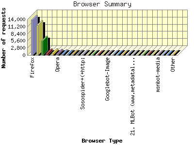
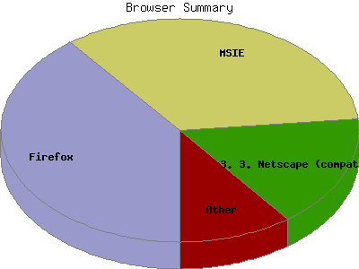

Report generated by Analog 6.0 and Report Magic 2.21
|
Web Server Statistics for "Harish Narayanan (hnarayan) - April 2008" Report generated by Analog 6.0 and Report Magic 2.21 |
The Browser Summary identifies the most popular web browsers used to visit
this site.
Browsers are broken down by recognized categories such as
Netscape Navigator/Communicator, Microsoft Internet Explorer, WebTV, Opera
and the like. Within each category is also a subgroup by version number
such as 'MSIE 5.0' or 'Netscape 4.5'.
This report shows all results. This report is sorted by number of requests.


| Browser Type | Number of requests | Number of bytes transferred | Percentage of the bytes | Percentage of the requests | |
|---|---|---|---|---|---|
| 1. | Firefox | 13,736 | 336.263 MB | 22.66% | 39.48% |
| Firefox/2 | 12,054 | 318.362 MB | 21.46% | 34.64% | |
| Firefox/3 | 1,028 | 10.479 MB | 0.71% | 2.95% | |
| Firefox/1 | 640 | 7.398 MB | 0.50% | 1.84% | |
| Firefox/0 | 14 | 24.249 KB | 0.00% | 0.04% | |
| 2. | MSIE | 11,820 | 280.405 MB | 18.90% | 33.97% |
| MSIE/6 | 5,145 | 86.585 MB | 5.83% | 14.79% | |
| MSIE/7 | 6,624 | 193.053 MB | 13.01% | 19.04% | |
| MSIE/5 | 51 | 785.422 KB | 0.05% | 0.15% | |
| 3. | Netscape (compatible) | 5,651 | 632.431 MB | 42.62% | 16.24% |
| 4. | Safari | 821 | 15.649 MB | 1.05% | 2.36% |
| Safari/525 | 648 | 10.127 MB | 0.68% | 1.86% | |
| Safari/523 | 147 | 4.233 MB | 0.28% | 0.42% | |
| Safari/312 | 11 | 133.638 KB | 0.01% | 0.03% | |
| Safari/412 | 13 | 23.784 KB | 0.00% | 0.04% | |
| 5. | Mozilla | 755 | 5.079 MB | 0.34% | 2.17% |
| Mozilla/1 | 682 | 4.087 MB | 0.28% | 1.96% | |
| 6. | Opera | 519 | 6.213 MB | 0.42% | 1.49% |
| Opera/9 | 508 | 5.864 MB | 0.40% | 1.46% | |
| Opera/8 | 11 | 357.335 KB | 0.02% | 0.03% | |
| 7. | msnbot | 310 | 17.348 MB | 1.17% | 0.89% |
| msnbot/1 | 310 | 17.348 MB | 1.17% | 0.89% | |
| 8. | beast | 227 | 84.935 MB | 5.72% | 0.65% |
| beast/Nutch-0 | 227 | 84.935 MB | 5.72% | 0.65% | |
| 9. | ConveraCrawler | 203 | 34.313 MB | 2.31% | 0.58% |
| ConveraCrawler/0 | 203 | 34.313 MB | 2.31% | 0.58% | |
| 10. | Konqueror | 116 | 880.660 KB | 0.06% | 0.33% |
| Konqueror/3 | 116 | 880.660 KB | 0.06% | 0.33% | |
| 11. | Sosospider+(+http: | 101 | 204.180 KB | 0.01% | 0.29% |
| Sosospider+(+http://help | 101 | 204.180 KB | 0.01% | 0.29% | |
| 12. | Wget | 57 | 52.068 KB | 0.00% | 0.16% |
| Wget/1 | 57 | 52.068 KB | 0.00% | 0.16% | |
| 13. | noxtrumbot | 57 | 42.243 MB | 2.85% | 0.16% |
| noxtrumbot/1 | 57 | 42.243 MB | 2.85% | 0.16% | |
| 14. | Netscape | 54 | 1.056 MB | 0.07% | 0.15% |
| Netscape/3 | 2 | 15.696 KB | 0.00% | 0.01% | |
| Netscape/4 | 52 | 1.041 MB | 0.07% | 0.15% | |
| 15. | ICC-Crawler-3(Mozilla-compatible; icc-crawl-contact(at)ml(dot)nict(dot)go(dot)jp; http: | 46 | 8.123 MB | 0.55% | 0.13% |
| ICC-Crawler-3(Mozilla-compatible; icc-crawl-contact(at)ml(dot)nict(dot)go(dot)jp; http://kc | 46 | 8.123 MB | 0.55% | 0.13% | |
| 16. | Googlebot-Image | 42 | 42.163 KB | 0.00% | 0.12% |
| 17. | Ocelli | 40 | 3.456 MB | 0.23% | 0.12% |
| Ocelli/1 | 40 | 3.456 MB | 0.23% | 0.12% | |
| 18. | WebAlta Crawler | 30 | 462.902 KB | 0.03% | 0.09% |
| WebAlta Crawler/2 | 30 | 462.902 KB | 0.03% | 0.09% | |
| 19. | Yeti | 27 | 237.359 KB | 0.02% | 0.08% |
| Yeti/1 | 27 | 237.359 KB | 0.02% | 0.08% | |
| 20. | Baiduspider+(+http: | 26 | 179.785 KB | 0.01% | 0.07% |
| Baiduspider+(+http://www | 26 | 179.785 KB | 0.01% | 0.07% | |
| 21. | MLBot (www.metadatalabs.com) | 24 | 9.202 MB | 0.62% | 0.07% |
| 22. | SonyEricssonT250i | 18 | 131.284 KB | 0.01% | 0.05% |
| SonyEricssonT250i/R5DB002 | 18 | 131.284 KB | 0.01% | 0.05% | |
| 23. | ia_archiver | 13 | 187.049 KB | 0.01% | 0.04% |
| 24. | WWW-Mechanize | 12 | 86.297 KB | 0.01% | 0.03% |
| WWW-Mechanize/1 | 12 | 86.297 KB | 0.01% | 0.03% | |
| 25. | yacybot (i386 Linux 2.6.22-14-generic; java 1.5.0_13; Europe | 11 | 113.716 KB | 0.01% | 0.03% |
| yacybot (i386 Linux 2.6.22-14-generic; java 1.5.0_13; Europe/en) | 11 | 113.716 KB | 0.01% | 0.03% | |
| 26. | msnbot-media | 10 | 421.801 KB | 0.03% | 0.03% |
| msnbot-media/1 | 10 | 421.801 KB | 0.03% | 0.03% | |
| 27. | Attributor | 10 | 188.722 KB | 0.01% | 0.03% |
| Attributor/Dejan-1 | 10 | 188.722 KB | 0.01% | 0.03% | |
| 28. | MLBot (www.metadatalabs.com | 7 | 32.762 KB | 0.00% | 0.02% |
| MLBot (www.metadatalabs.com/mlbot) | 7 | 32.762 KB | 0.00% | 0.02% | |
| 29. | W3C_Validator | 6 | 51.578 KB | 0.00% | 0.02% |
| W3C_Validator/1 | 6 | 51.578 KB | 0.00% | 0.02% | |
| 30. | nrsbot | 3 | 88.759 KB | 0.01% | 0.01% |
| nrsbot/5 | 3 | 88.759 KB | 0.01% | 0.01% | |
| 31. | Gigabot | 3 | 36.490 KB | 0.00% | 0.01% |
| Gigabot/3 | 3 | 36.490 KB | 0.00% | 0.01% | |
| 32. | nutch | 3 | 36.490 KB | 0.00% | 0.01% |
| nutch/Nutch-1 | 3 | 36.490 KB | 0.00% | 0.01% | |
| 33. | Googlebot | 3 | 1.445 MB | 0.10% | 0.01% |
| 34. | boitho.com-dc | 3 | 17.438 KB | 0.00% | 0.01% |
| boitho.com-dc/0 | 3 | 17.438 KB | 0.00% | 0.01% | |
| 35. | webcollage | 3 | 72.459 KB | 0.01% | 0.01% |
| 36. | yacybot (i386 Linux 2.6.22-14-generic; java 1.5.0_13; GMT+01:00 | 3 | 14.633 KB | 0.00% | 0.01% |
| yacybot (i386 Linux 2.6.22-14-generic; java 1.5.0_13; GMT+01:00/en) | 3 | 14.633 KB | 0.00% | 0.01% | |
| 37. | IIITBOT | 2 | 14.383 KB | 0.00% | 0.01% |
| IIITBOT/1 | 2 | 14.383 KB | 0.00% | 0.01% | |
| 38. | Speedy Spider (http: | 2 | 13.337 KB | 0.00% | 0.01% |
| Speedy Spider (http://www | 2 | 13.337 KB | 0.00% | 0.01% | |
| 39. | Java | 1 | 7.191 KB | 0.00% | 0.00% |
| Java/1 | 1 | 7.191 KB | 0.00% | 0.00% | |
| 40. | Nokia6820 | 1 | 7.191 KB | 0.00% | 0.00% |
| Nokia6820/2 | 1 | 7.191 KB | 0.00% | 0.00% | |
| 41. | Basalt v090b | 1 | 7.191 KB | 0.00% | 0.00% |
| 42. | BlackBerry8100 | 1 | 288.870 KB | 0.02% | 0.00% |
| 43. | gnelapjagchecwdbjodpoommb3 | 1 | 7.167 KB | 0.00% | 0.00% |
| 44. | FAST Enterprise Crawler 6 | 1 | 0.000 B | 0.00% | 0.00% |
| 45. | Python-urllib | 1 | 7.191 KB | 0.00% | 0.00% |
| Python-urllib/1 | 1 | 7.191 KB | 0.00% | 0.00% | |
| 46. | yewfphwryttdonabjbhbxr | 1 | 7.063 KB | 0.00% | 0.00% |
| 47. | oqsyoqyqj rpleiitbolyuAAuonl s aqmar0xp | 1 | 7.063 KB | 0.00% | 0.00% |
| 48. | winalofwfkqcdyckjvsxabitHjjf | 1 | 28.457 KB | 0.00% | 0.00% |
| 49. | tp | 1 | 7.063 KB | 0.00% | 0.00% |
| tp/8y | 1 | 7.063 KB | 0.00% | 0.00% | |
| 50. | Sleipnir | 1 | 549.000 B | 0.00% | 0.00% |
| 51. | Googlebot-Video | 1 | 1.483 MB | 0.10% | 0.00% |
| 52. | PEAR HTTP_Request class ( http: | 1 | 288.870 KB | 0.02% | 0.00% |
| 53. | Gaisbot | 1 | 7.191 KB | 0.00% | 0.00% |
| Gaisbot/3 | 1 | 7.191 KB | 0.00% | 0.00% | |
| 54. | qliqm a v3jqumhchyiwcbagesgvoge33kdbyf | 1 | 7.063 KB | 0.00% | 0.00% |
| 55. | Firefox mutant | 1 | 7.191 KB | 0.00% | 0.00% |
| 56. | yacybot (amd64 Linux 2.6.22-14-generic; java 1.5.0_13; GMT+01:00 | 1 | 7.191 KB | 0.00% | 0.00% |
| yacybot (amd64 Linux 2.6.22-14-generic; java 1.5.0_13; GMT+01:00/en) | 1 | 7.191 KB | 0.00% | 0.00% | |
| 57. | uxtumtcbueayabfxsymkritsjitvawf | 1 | 7.063 KB | 0.00% | 0.00% |
| 58. | Xenu Link Sleuth 1.2j | 1 | 0.000 B | 0.00% | 0.00% |
| 59. | Think | 1 | 7.191 KB | 0.00% | 0.00% |
| Think/Nutch-0 | 1 | 7.191 KB | 0.00% | 0.00% | |
This report was generated on May 20, 2008 21:39.
Report time frame April 1, 2008 00:00 to April 30, 2008 23:59.
| Web statistics report produced by: | |
 Analog 6.0 Analog 6.0 |  Report Magic 2.21 Report Magic 2.21 |